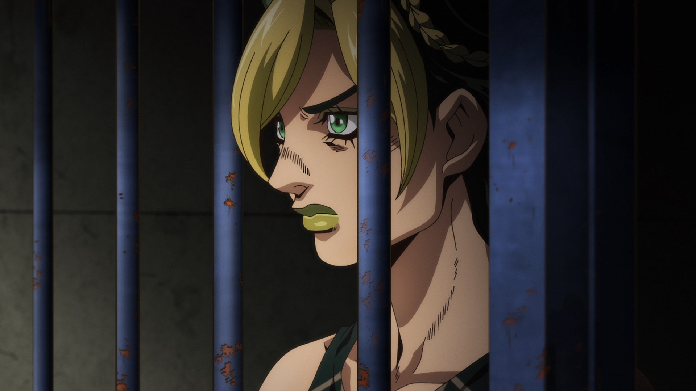
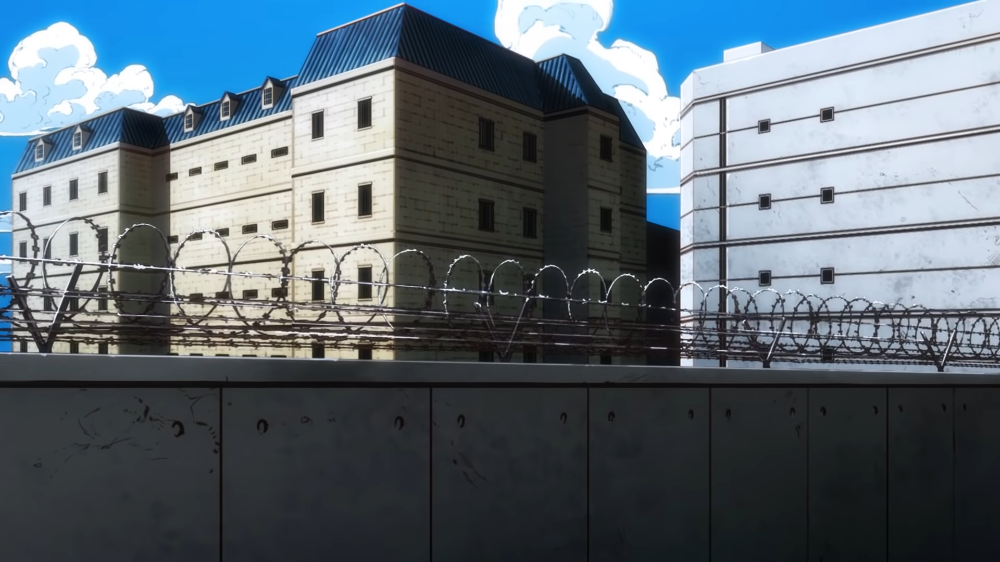
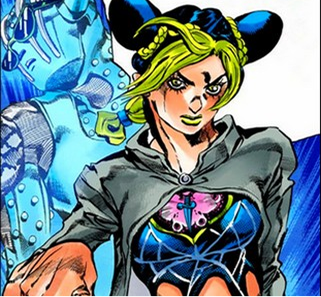
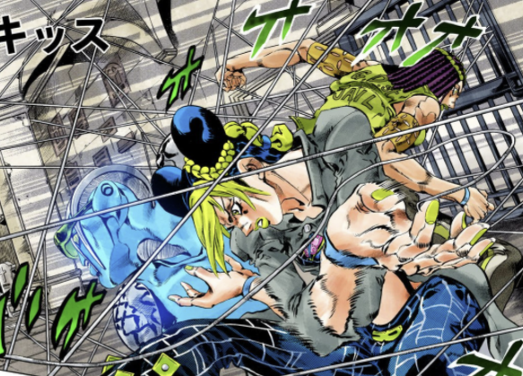
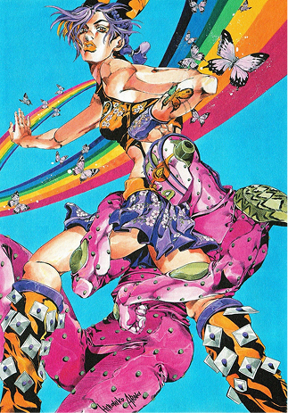
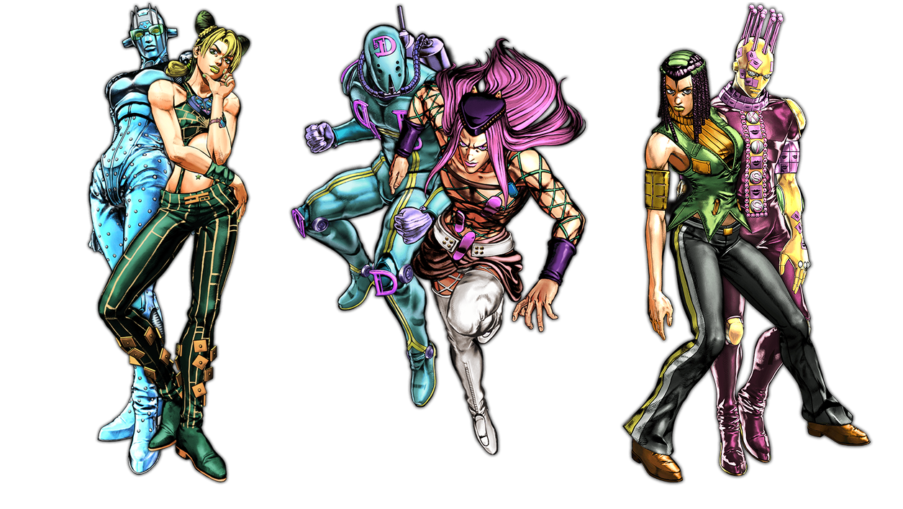

(BACKGROUND)
미국 플로리다의 교도소를 중심 무대로, 폐쇄된 공간 안에서의 해방과 진화를 다룬다. 감옥의 콘크리트 질감, 인공 조명, 금속 구조물 등 차갑고 인공적인 공간미가 전체 분위기를 지배한다. 제한된 구역 속에서도 빛과 그림자를 활용해 자유에 대한 갈망과 심리적 긴장감을 시각적으로 표현한다.


(SYMBOL)



쿠죠 죠린 – 나비
죠린의 가장 대표적인 심볼로, ‘구속 속의 자유’를 상징한다. 감옥이라는 제한된 공간 안에서도 스스로 날아오르려는 변화와 진화의 의지를 표현한다. 실제 작품 내에서도 나비는 영혼, 생명, 해방의 상징으로 반복 등장하며, 스톤 오션의 테마인 “자유로 향한 진화”를 시각적으로 드러낸다. 시각적으로는 형광빛 청록・보라 계열의 날개색, 비대칭 날개 형태, 투명한 겹층 구조 등으로 표현하면 ‘갇힌 공간 안에서도 빛을 내는 존재’라는 주제를 강조할 수 있다.
쿠죠 죠린 - 실
죠린의 스탠드 ‘스톤 프리(Stone Free)’의 핵심 능력이자 자아의 연장선. 실은 자신의 신체를 해체하고 다시 엮는 매개체로, ‘자유’와 ‘개인의 경계 해체’를 상징한다. 물리적으로는 인체를 실로 분해하는 설정이지만, 철학적으로는 ‘자아의 분리와 재조합’, 즉 정체성의 재정의를 나타낸다. 디자인적으로는 얇고 유기적인 라인이 얽히고 흐르는 형태로 표현하면, 죠린의 내면적 결속・의지・연결을 시각적으로 전달할 수 있다.
(FORM)
인체의 라인이 날카롭고 길게 뻗어, 힘과 긴장감이 공존하는 실루엣을 형성한다. 근육선이 강조되며, 움직임이 강한 포즈 구성이 특징. 죠린을 비롯한 캐릭터들의 의상은 기능적이면서도 실험적인 디자인으로, 감금된 공간 안에서도 자유로운 조형의 의지를 상징한다
